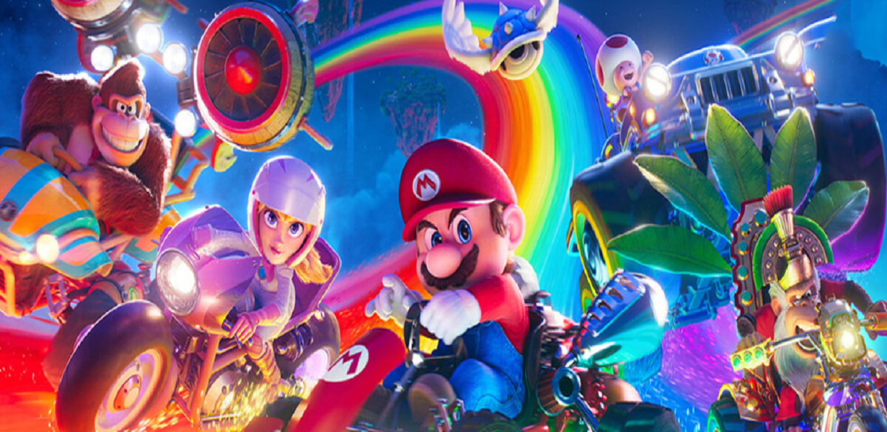

Sinopse: Super Mario Bros
O Filme é do mesmo produtor dos sucessos da série de filmes Meu Malvado Favorito e Minions. Em um mundo mágico, o terrível Bowser é o rei dos Koopas, segue em sua jornada de conquistas, querendo dominar todos os reinos. Misteriosamente, Luigi e seu irmão encanador Mario vão parar no Reino dos Cogumelos, governado pela Princesa Peach. Uma vez lá, Mario precisará usar todo o seu talento para enfrentar a fúria de Bowser, vilão que ameaça a vida de seu irmão e também da donzela. Agora, o baixinho e bigodudo já sabe que a paz dependerá de suas incríveis habilidades. Inspirado na série de jogos com o personagem de incrível sucesso, criado em 1985, pela Nintendo.